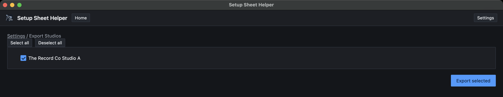

Part 11
Sharing and backups
Studios and setups can be saved to a file, handed to another engineer, and imported on their Mac. This part covers both kinds of file, the online studio library, and the safety nets the app runs on its own.
Two kinds of file
Everything here lives in Settings → Import/Export.

- A studio file (
studios-export.json) carries whole rooms: each studio's mics, outboard, preamps and room layout. Use it to share a room you've set up, or to move your studios to another Mac. - A setup file (
setups-export.json) carries setup sheets: every row, the column choices, session notes, and the setup's own room layout if it has one.
One file can hold as many studios, or as many setups, as you like.
Exporting studios
-
Click Export studios…
In Settings → Import/Export, click Export studios…. The Export Studios screen lists your custom studios, in their folders.
-
Tick the studios to include
Tick each studio you want, or use Select all and Deselect all.

-
Save the file
Click Export selected and choose where to save. The file is named
studios-export.jsonunless you change it. The app confirms with Exported to and the file's location.
Only studios you've made yourself can be exported. Berklee's rooms are already built into the app, so there's nothing to share.
Importing studios
-
Pick the file
Click Import studios… and choose a studio file.
-
Choose which studios to bring in
The Import studios screen lists every studio in the file, with its mic, outboard and preamp counts and whether it has a room layout. Everything starts ticked, except studios you already have.
-
Click Import
The button names how many you've chosen, such as Import 2 studios. Back on the tab, a message lists what was imported.
Imported studios land under New Setup From Studio Template as custom studios, alongside the ones you already had. You can edit them like any other studio.
Studios you already have
If a studio in the file has the same name as one of yours, it's marked Already imported and starts unticked, so re-importing a file never duplicates rooms by accident. You have two choices:
- Skip it. Leave it unticked. The message afterward lists it as skipped.
- Import it anyway. Click Import as a copy. The copy gets a number after its name, such as Studio A (2), so you can tell the two apart.
Exporting setups
Click Export setups…, tick the setups you want on the Export Setups screen, then click Export selected and choose where to save. The file is named setups-export.json unless you change it.
A setup file doesn't include the blocks, notes or markup on the floor plan. To hand someone the finished plan, export a PDF with the room layout included instead. Part 3 covers PDF export.
Importing setups
A setup always belongs to a studio, so importing one means choosing which studio it goes into.
-
Pick the file
Click Import setups… and choose a setup file.
-
Choose a studio
Under Import into, pick the studio to file the setups under. Your custom studios are listed, plus Berklee's rooms if Berklee features are on.
-
Choose the setups
Under Setups to import, tick the ones you want, or use Select all.
-
Click Import Selected
The setups appear in your saved setups.
Gear is matched by name against the studio you chose. A mic, outboard unit or preamp that the studio has is linked up as normal, with its in-use count. One it doesn't have comes in as plain text in the cell, so nothing is lost, but the app can't count it. Pick a studio with the same gear as the original for the best match.
When an import doesn't work
- The file came from a newer version of the app. The app refuses it and says the file was made by a newer version of Setup Sheet Helper. Update the app (see Part 13) and import again.
- The file isn't a studio or setup file, or is damaged. The app says it couldn't read the file.
- The import fails partway. Imports are all or nothing. If anything goes wrong, nothing is changed, and you won't be left with half a studio or an empty setup.
The online studio library
You don't always need a file. Ready-made studios are available online, and you can download them straight into the app with Browse studios online… on the Import/Export tab. Downloads go through the same import screen as a file, including the Already imported check. Part 6 walks through it.
You can also browse the same studios in your web browser on the Studio Downloads page, which the Browse downloadable studios link on the tab opens. Files you download there import with Import studios….
Automatic safety nets
The app protects your work without you doing anything:
- A backup before updates. Before an update changes how your data is stored, the app copies your database to a
backupsfolder. It keeps the five most recent copies. - Saving on quit. Quitting saves any edits that haven't been saved yet, including in the pop-out Layout window.
- One copy at a time. Only one copy of the app can run. Opening it again brings the window that's already open to the front, so two copies can never overwrite each other's work.
- All-or-nothing saves and imports. A save or import either finishes completely or changes nothing.
The automatic backups live in ~/Library/Application Support/Setup Sheet Helper/backups. They're a last resort, only made when an update changes your data. For your own backups, export your studios and setups to files every so often and keep them somewhere safe.